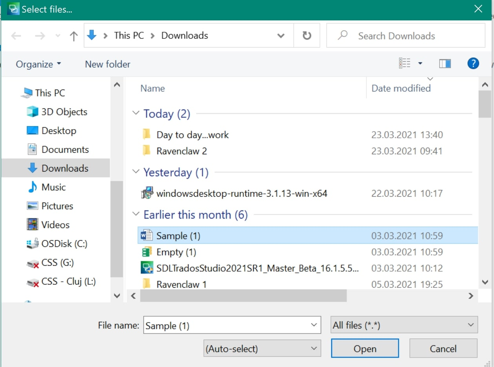
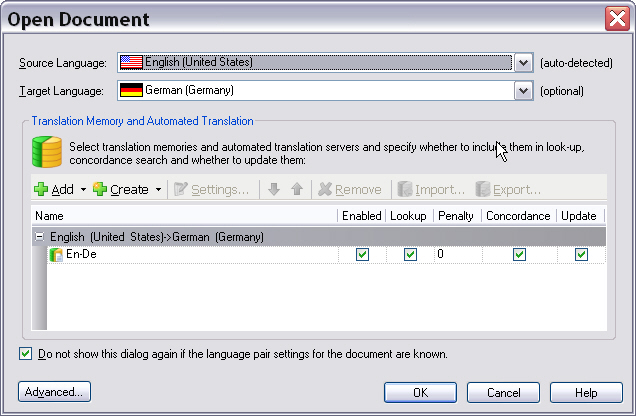
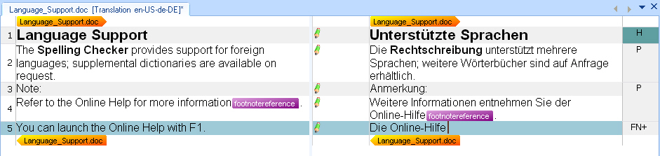
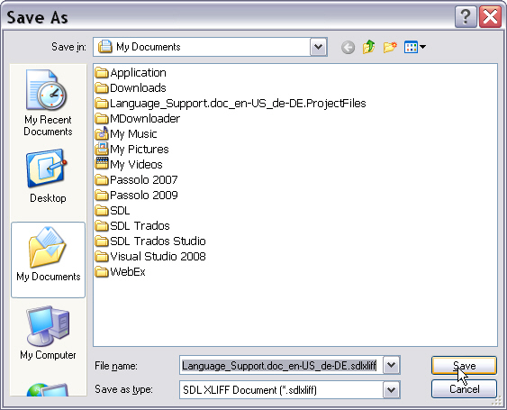
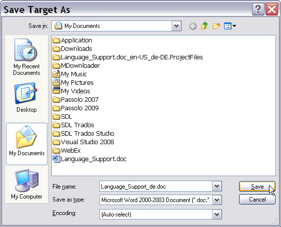

Opening a document for translation
In Trados Studio, translators open a single document for translation and editing.
When they open a document, such as a Microsoft Word (*.doc) file, the File Type Support Framework selects the file type plug-in that best matches the format.

The translator then selects the source and target languages. They can also select one or more translation memories (TM). If they do not need a TM, they can work directly in the Trados Studio editor.

Convert the document to an intermediary format
In the background, Trados Studio creates an intermediary bilingual file, such as SDLXliff, from the native document. This step is called extraction because Trados Studio pulls the translatable content out for translation.
Trados Studio can embed the original native file as a dependency inside the intermediary file. It may need that dependency later to generate the native target document, especially when the document contains images or diagrams that must appear in the final file.
The source and target content appears in a side-by-side editor. Translators enter the target text segment by segment in the right-hand column. The last column shows document structure information, which identifies headings (H) and footnotes (FN) (see Using Context Information).
The file type plug-in also extracts localizable content and displays special elements as inline placeholder tags, such as footnote references, fields, and index markers (see Tag display modes). Translators must insert those elements into the target text so the final document keeps the correct references and structure.

During translation, Trados Studio saves all changes in the intermediary bilingual file, such as SDLXliff. The native document remains unchanged until generation.

Generate the native target file
At the end of translation, the translator uses a command such as Save Target As to generate the target-language version in the native document format. This last step is called generation.
